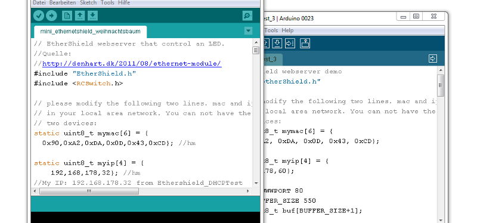
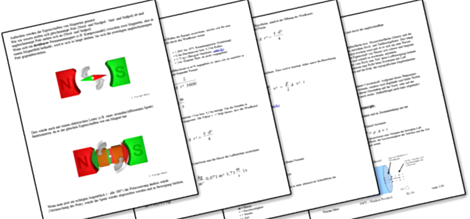
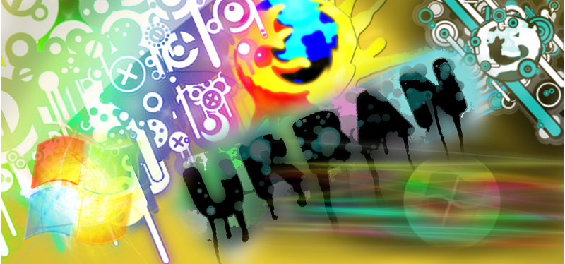
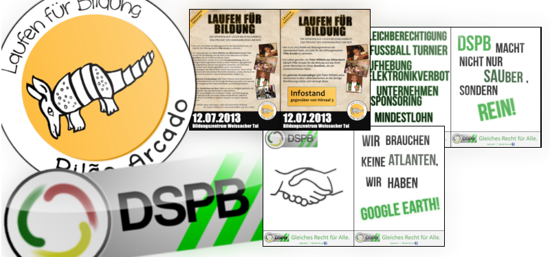
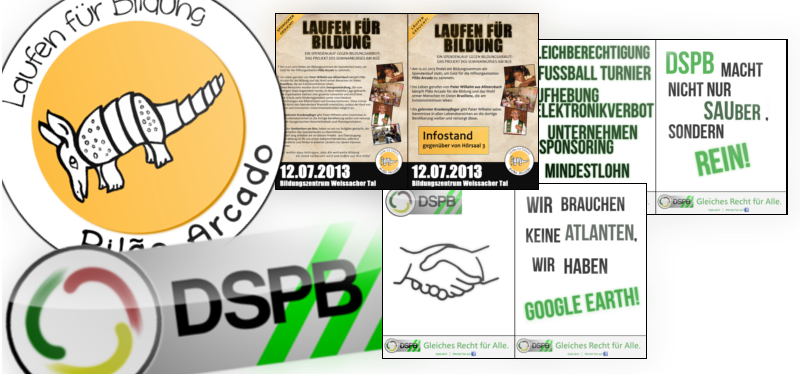
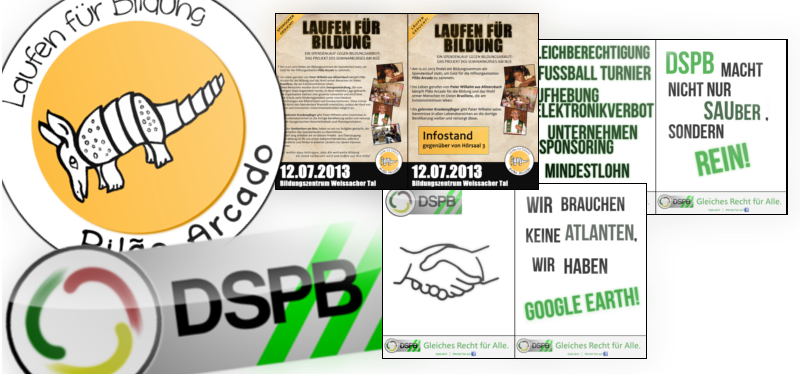
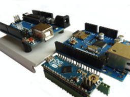
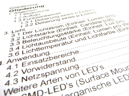

 


Grafiken
Vor einigen Jahren bereits habe ich angefangen Grafiken zu entwerfen. Zunächst 2D, dann jedoch auch 3D-Grafiken, die ich für schulische und private Projekte gut nutzen konnte. Werfen Sie hier einen Blick darauf!

Arduino
Einige Projekte, die ich mit meinem Arduino UNO gestartet hatte. Sie können den Code hier herunterladen oder mein Video zur Steuerung der Weihnachtsbeleuchtung anschauen!

Dokumente
Texte und Vorträge, die ich in den vergangenen Jahren geschrieben und gehalten habe. Sie können diese hier im PDF-Format herunterladen und durchlesen.Grafiken
Hier können Sie eine Auswahl an Grafiken sehen, die ich in den letzten Jahren erstellt habe.
Sie können auf die jeweilige Grafik klicken, um sie in voller Auflösung anzusehen und herunterzuladen. Die Projekte sind hierarchisch sortiert, das bedeutet ich beginne damit die aktuellsten meiner Projekte zu präsentieren und ende mit meinen ältestenProjekten bzw. Grafiken.
Die Welt auf 24 Hektar
"Eine Schule - Eine Welt: Die Welt auf 24 Hektar" ist ein eintägigies Projekt der SOR-Gruppe (Schule ohne Rassismus) an unserer Schule. An diesem Tagstellt jede Klasse ein Land ihrer Wahl in ihrem Klassenzimmer vor. Dabei werden die verschiedenen Nationalitäten durch Speisen, typische Kleidung etc.dargestellt. In Kooperation mit einem befreundeten Grafik-Designer entwurfen wir ein Logo für dieses Projekt, was sich aufgrund des etwas schwierigenTitel als eine nicht zu einfache Aufgabe herrausstellte. Außerdem soll hierzu noch ein Plakat folgen, dieses ist jedoch noch in Arbeit und wird hierbald erscheinen. Sie sehen einige Entwürfe, die noch im Plenum besprochen werden müssen.
Abi-Shirt Bize 2014, Tshirt Polenfahrt 2012
Auch zwei Projekte, die für mich selbst eine große Bedeutung haben: Ich durfte sowohl das Abschluss-T-Shirt unserer Stufe sowie ein T-Shirt designen, daswir bei unserem Exkurs nach Polen trugen, gestalten. Beide Entwurfe entstanden in Kooperation mit der Stufe und wurden dort vorgestellt, besprochen undverändert. Im ersten Bild sehen Sie das Abi-Shirt, wie es im Moment aussieht und im zweiten eine leicht veränderte - aber aufgrund von Druckkomplikationen- nicht druckbare Version der Vorderseite, also dem Hauptmotiv. Der letzte Entwurf stellt das fertige Polen-T-Shirt dar. Hier gab es weniger Probleme, daes sich um ein sehr einfaches Motiv handelt.
Tag der offenen Tür 2014 am Bize
Für den "Tag der Offenen Tür" am Bize 2014 erstellte ich einen Button, der an die Kinder ausgehändigt werden sollte, die sich an diesem Tag über dieschulischen Möglichkeiten am Bildungszentrum informierten. Das erste Bild ist der finale Entwurf, die beiden anderen stellen alternativeDesignmöglichkeiten dar, die sich nur minimal vom finalen Design unterscheiden, jedoch nicht genau so viel Anklang fanden.
GFS - LED
Dieses Jahr hielt ich meine erste GFS ebenfalls im Fach Physik, dieses Jahr über die LED. Zum besseren Verständnis des Aufbaus einer solchen LEDhabe ich eine 3D-Grafik einer roten LED erstellt. Ebenfalls habe ich jedoch jedem Zuhörer eine LED ausgeteilt, damit sie sich selbst den Aufbauanschauen können.


GFS - Elektromotor
Diese Grafiken verwendete ich für einen Vortrag in der 9. Klasse, bei welchem ich den Elektromotor vorstellte, die Entstehung und dieFunktionsweise. Der Vortrag war eine GFS - ein Vortrag, welcher einmal im Schuljahr gehalten werden muss und die Wertigkeit einer Klassenarbeitbesitzt. Sie können diese GFS und die anderen Dokumente unter "Dokumente" nachlesen und herunterladen.
3D-Skizzen
..zum Bau einer "Sortiermaschine" - Projekt der Klasse 9 im Fach NwT(Naturwissenschaft und Technik). Es galt verschiedene Münzen und Gegenstände zutrennen. Dies wurde durch verschiedene Massen und Größen möglich. In den Skizzen sind verschiedene Möglichkeiten der Trennung dargestellt.

..zum Bau einer kleinen "Windkraftanlage", die später durch den künstlich erzeugten Luftstrom angetrieben werden sollte und somit Strom liefernsollte. Es handelte sich hier ebenfalls um ein Projekt im Fach NwT, jedoch in der 10. Klasse. Sie sehen hier einige Skizzen aus dem Protokoll desProjektes, in dem ich einige verschiedene Arten von Windkraftanlagen beschrieb und ihre Funktionsweise erklärte.
3D Grafiken
Später habe ich begonnen, vom 2-Dimensionalen zu 3D-Grafiken zu wechseln. Nach anfänglichen kleinen Test-Projekten startete ich eine Reihe vonkünstlerischen Bildern, die ich auch mit 2D-Elementen mischte. Das letzte Bild ist eine kleine Zusammenstellung von Objekten, die ich für einen kleinenMod eines Computerspiels erstellt habe. Dieses nannte sich "Gentle Clonker 2".
Jedoch auch in der Schule bei Projekten, erwies sich diese Art der Darstellung bei Skizzen und Bildern als sehr hilfreich.

OrtsSeniorenRat
Durch das Projekt "Laufen für Bildung" ist die zuständige Modedesignerin, die uns bei diesem Projekt betreut hat, auf mich zugekommen, mit der Bitte, einLogo zu entwerfen, das den neuen Ortsseniorenrat im Weissach im Tal repräsentieren soll. Diese waren mit ihrem alten Logo unzufrieden und drängtendringend auf eine Modernisierung dessen. In Kooperation mit einem örtlichen Grafiker einigten wir uns auf den ersten Entwurf, die beiden anderen sindalternative Vorschläge, die auch gut angekommen sind.
LFB - Laufen für Bildung
Ich habe mich bei der Wahl meiner Oberstufenfächer unter Anderem für den Seminarkurs an unserer Schule entschieden. In diesem werden Projekte realisiert,die in jenem Schuljahr vorbereitet werden und gegen Ende vorgestellt werden bzw. stattfinden. Dieses Jahr handelt es sich um einen Spendenlauf, der anunserer Schule stattfinden und von uns - dem Seminarkurs organisiert wird. Hierbei wurden verschiedene Aufgaben verteilt, wobei ich die Gestaltung derMedien und der Onlinepräsenz übernahm. Sie können hier einen Auszug aus meinen Beiträgen sehen.Die offizielle Website, die jedoch nicht mehr onlineist, können sie hier betrachten.
DSPB - Schule als Staat
Bei dem Projekt "Schule als Staat" geht es darum, als Schule einen eigenständigen Staat aufzubauen und zu führen. Das Bildungszentrum Weissacher Talals Verbundsschule aus Gymnasium, Real- und Werkrealschule stellte dieses Projekt mit mehr als 1600 Schülern auf die Beine. Bevor dieses Projektbegann, wurde natürlich Wahlkampf für die Parteien betrieben, die später die Regierung bilden sollten. Als Mitglied der DSPB - Der DemokratischenSchülerpartei Bizedoniens, nahm ich den visuellen Part des Wahlkampfes in die Hand. Hier sehen Sie das offizielle Logo und ein Auszug aus den Plakaten.
2D Grafiken
Die ersten Grafiken, mit denen ich mich befasste, waren 2D-Grafiken.
Sie können hier einige Beispiele meiner ersten Arbeiten sehen. Diese habe ich ausschließlich mit GIMP erstellt, später habe ich jedoch auch Photoshopgenutzt um z. B. die Plakate des Laufen-für-Bildung-Projektes zu erstellen.
Arduino
Hier können Sie sehen, was ich an Projekte mit meinem Arduino gemacht habe. Sie sehen hier mein bisher größtes Projekt, das Steuern der Beleuchtung unseres letztjährigen Weihnachtsbaums mithilfe einer Funksteckdose und demArduino mit dem zusätzlichen Ethernet-Shield.
Näheres und Bildmaterial können Sie im Video sehen.
Den Code zu diesem Projekt können Sie hier herunterladen:
Projekt Weihnachtsbaum-Beleuchtung
- Ampelschaltung
- Ampelschaltung (vereinfacht, mit for-Schleife)
- Einlesung einer Bitfolge mithilfe des PulseIn-Befehls
- Abwechselnde blinkende LEDs
- Blinkende LEDs über Ethernet
- Ausgabe der IP-Adresse des Arduinos (Serielle Schnittstelle)
- Ausgabe der IP-Adresse des Arduinos (Serielle Schnittstelle, Alternativ)
- An und Ausschalten einer Lampe (über Website)
- Dimmen einer LED (Analoger Anschluss)
- Ansteuern einer LED über einen Taster
- Ansteuerung eines Servo-Motors
- Speichern der Daten eines Temperaturfühlers auf einer SD-Karte
- Erstellen eines WebClients auf dem Arduino
- Ausgabe der IP-Adresse des Arduinos (Serielle Schnittstelle, Alternativ)
Die herunterladbaren Dateien sind .ino-Dateien. Sie wurden mit der Software zur Programmierung des Arduinos geschrieben. Um diese öffnen zu können,installieren Sie bitte die neuste Version der Arduino-Software (Arduino Software Download)
Neben diesen kleinen "Spielereien" dient der Arduino auch als nützlicher Helfer bei Vorträgen, die sich um Technik drehen, um gewisse Schaltungendarzustellen. Beispielsweise habe ich bei meiner Präsentation über die LEDeinige LEDs in einereinfachen Schaltung angesteuert, um ein paar Anwendungsbeispiele in den Vortrag einzubringen. Dies kam sehr gut bei der Zuhörerschaft an undbrachte etwas Praktisches in den Vortrag.
Dokumente
Sie können hier einige Dokumente anschauen und herunterladen, die in Zusammenhang mit den Grafiken stehen. Ich erstellte diese in den letzten drei Jahren,wobei es sich meist um Vorträge oder große Projekte aus der Schule handelt.
Klicken Sie auf die jeweilige Grafik, um das Dokument herunterzuladen!
(Achtung: Manche Dokumente sind sehr groß (bis zu 50MB), da viele Bilder und Grafiken enthalten sind!)